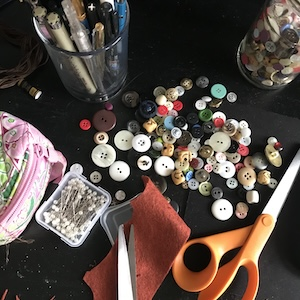
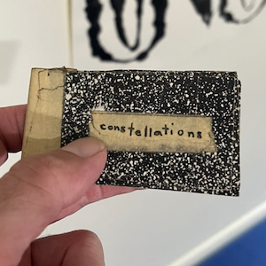
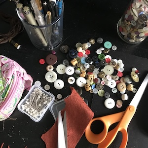
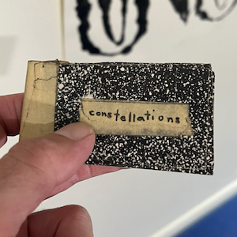
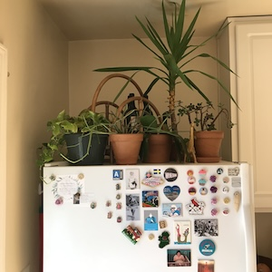
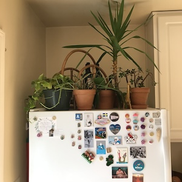

TRUISMS (1978-1983)
JENNY HOLZER
A LITTLE KNOWLEDGE CAN GO A LONG WAY
A LOT OF PROFESSIONALS ARE CRACKPOTS
A MAN CAN'T KNOW WHAT IT IS TO BE A MOTHER
A NAME MEANS A LOT JUST BY ITSELF
A POSITIVE ATTITUDE MEANS ALL THE DIFFERENCE IN THE WORLD
A RELAXED MAN IS NOT NECESSARILY A BETTER MAN
A SENSE OF TIMING IS THE MARK OF GENIUS
A SINCERE EFFORT IS ALL YOU CAN ASK
A SINGLE EVENT CAN HAVE INFINITELY MANY INTERPRETATIONS
A SOLID HOME BASE BUILDS A SENSE OF SELF
A STRONG SENSE OF DUTY IMPRISONS YOU
ABSOLUTE SUBMISSION CAN BE A FORM OF FREEDOM
ABSTRACTION IS A TYPE OF DECADENCE
ABUSE OF POWER COMES AS NO SURPRISE
ACTION CAUSES MORE TROUBLE THAN THOUGHT
ALIENATION PRODUCES ECCENTRICS OR REVOLUTIONARIES
ALL THINGS ARE DELICATELY INTERCONNECTED
AMBITION IS JUST AS DANGEROUS AS COMPLACENCY
AMBIVALENCE CAN RUIN YOUR LIFE
AN ELITE IS INEVITABLE
ANGER OR HATE CAN BE A USEFUL MOTIVATING FORCE
ANIMALISM IS PERFECTLY HEALTHY
ANY SURPLUS IS IMMORAL
ANYTHING IS A LEGITIMATE AREA OF INVESTIGATION
ARTIFICIAL DESIRES ARE DESPOILING THE EARTH
AT TIMES INACTIVITY IS PREFERABLE TO MINDLESS FUNCTIONING
AT TIMES YOUR UNCONSCIOUSNESS IS TRUER THAN YOUR CONSCIOUS MIND
AUTOMATION IS DEADLY
AWFUL PUNISHMENT AWAITS REALLY BAD PEOPLE
BAD INTENTIONS CAN YIELD GOOD RESULTS
BEING ALONE WITH YOURSELF IS INCREASINGLY UNPOPULAR
BEING HAPPY IS MORE IMPORTANT THAN ANYTHING ELSE
BEING JUDGMENTAL IS A SIGN OF LIFE
BEING SURE OF YOURSELF MEANS YOU'RE A FOOL
BELIEVING IN REBIRTH IS THE SAME AS ADMITTING DEFEAT
BOREDOM MAKES YOU DO CRAZY THINGS
CALM IS MORE CONDUCTIVE TO CREATIVITY THAN IS ANXIETY
CATEGORIZING FEAR IS CALMING
CHANGE IS VALUABLE WHEN THE OPPRESSED BECOME TYRANTS
CHASING THE NEW IS DANGEROUS TO SOCIETY
CHILDREN ARE THE MOST CRUEL OF ALL
CHILDREN ARE THE HOPE OF THE FUTURE
CLASS ACTION IS A NICE IDEA WITH NO SUBSTANCE
CLASS STRUCTURE IS AS ARTIFICIAL AS PLASTIC
CONFUSING YOURSELF IS A WAY TO STAY HONEST
CRIME AGAINST PROPERTY IS RELATIVELY UNIMPORTANT
DECADENCE CAN BE AN END IN ITSELF
DECENCY IS A RELATIVE THING
DEPENDENCE CAN BE A MEAL TICKET
DESCRIPTION IS MORE IMPORTANT THAN METAPHOR
DEVIANTS ARE SACRIFICED TO INCREASE GROUP SOLIDARITY
DISGUST IS THE APPROPRIATE RESPONSE TO MOST SITUATIONS
DISORGANIZATION IS A KIND OF ANESTHESIA
DON'T PLACE TO MUCH TRUST IN EXPERTS
DRAMA OFTEN OBSCURES THE REAL ISSUES
DREAMING WHILE AWAKE IS A FRIGHTENING CONTRADICTION
DYING AND COMING BACK GIVES YOU CONSIDERABLE PERSPECTIVE
DYING SHOULD BE AS EASY AS FALLING OFF A LOG
EATING TOO MUCH IS CRIMINAL
ELABORATION IS A FORM OF POLLUTION
EMOTIONAL RESPONSES AR AS VALUABLE AS INTELLECTUAL RESPONSES
ENJOY YOURSELF BECAUSE YOU CAN'T CHANGE ANYTHING ANYWAY
ENSURE THAT YOUR LIFE STAYS IN FLUX
EVEN YOUR FAMILY CAN BETRAY YOU
EVERY ACHIEVEMENT REQUIRES A SACRIFICE
EVERYONE'S WORK IS EQUALLY IMPORTANT
EVERYTHING THAT'S INTERESTING IS NEW
EXCEPTIONAL PEOPLE DESERVE SPECIAL CONCESSIONS
EXPIRING FOR LOVE IS BEAUTIFUL BUT STUPID
EXPRESSING ANGER IS NECESSARY
EXTREME BEHAVIOR HAS ITS BASIS IN PATHOLOGICAL PSYCHOLOGY
EXTREME SELF-CONSCIOUSNESS LEADS TO PERVERSION
FAITHFULNESS IS A SOCIAL NOT A BIOLOGICAL LAW
FAKE OR REAL INDIFFERENCE IS A POWERFUL PERSONAL WEAPON
FATHERS OFTEN USE TOO MUCH FORCE
FEAR IS THE GREATEST INCAPACITATOR
FREEDOM IS A LUXURY NOT A NECESSITY
GIVING FREE REIN TO YOUR EMOTIONS IS AN HONEST WAY TO LIVE
GO ALL OUT IN ROMANCE AND LET THE CHIPS FALL WHERE THEY MAY
GOING WITH THE FLOW IS SOOTHING BUT RISKY
GOOD DEEDS EVENTUALLY ARE REWARDED
GOVERNMENT IS A BURDEN ON THE PEOPLE
GRASS ROOTS AGITATION IS THE ONLY HOPE
GUILT AND SELF-LACERATION ARE INDULGENCES
HABITUAL CONTEMPT DOESN'T REFLECT A FINER SENSIBILITY
HIDING YOUR EMOTIONS IS DESPICABLE
HOLDING BACK PROTECTS YOUR VITAL ENERGIES
HUMANISM IS OBSOLETE
HUMOR IS A RELEASE
IDEALS ARE REPLACED BY CONVENTIONAL GOALS AT A CERTAIN AGE
IF YOU AREN'T POLITICAL YOUR PERSONAL LIFE SHOULD BE EXEMPLARY
IF YOU CAN'T LEAVE YOUR MARK GIVE UP
IF YOU HAVE MANY DESIRES YOUR LIFE WILL BE INTERESTING
IF YOU LIVE SIMPLY THERE IS NOTHING TO WORRY ABOUT
IGNORING ENEMIES IS THE BEST WAY TO FIGHT
ILLNESS IS A STATE OF MIND
IMPOSING ORDER IS MAN'S VOCATION FOR CHAOS IS HELL
IN SOME INSTANCES IT'S BETTER TO DIE THAN TO CONTINUE
INHERITANCE MUST BE ABOLISHED
IT CAN BE HELPFUL TO KEEP GOING NO MATTER WHAT
IT IS HEROIC TO TRY TO STOP TIME
IT IS MAN'S FATE TO OUTSMART HIMSELF
IT IS A GIFT TO THE WORLD NOT TO HAVE BABIES
IT'S BETTER TO BE A GOOD PERSON THAN A FAMOUS PERSON
IT'S BETTER TO BE LONELY THAN TO BE WITH INFERIOR PEOPLE
IT'S BETTER TO BE NAIVE THAN JADED
IT'S BETTER TO STUDY THE LIVING FACT THAN TO ANALYZE HISTORY
IT'S CRUCIAL TO HAVE AN ACTIVE FANTASY LIFE
IT'S GOOD TO GIVE EXTRA MONEY TO CHARITY
IT'S IMPORTANT TO STAY CLEAN ON ALL LEVELS
IT'S JUST AN ACCIDENT THAT YOUR PARENTS ARE YOUR PARENTS
IT'S NOT GOOD TO HOLD TOO MANY ABSOLUTES
IT'S NOT GOOD TO OPERATE ON CREDIT
IT'S VITAL TO LIVE IN HARMONY WITH NATURE
JUST BELIEVING SOMETHING CAN MAKE IT HAPPEN
KEEP SOMETHING IN RESERVE FOR EMERGENCIES
KILLING IS UNAVOIDABLE BUT NOTHING TO BE PROUD OF
KNOWING YOURSELF LETS YOU UNDERSTAND OTHERS
KNOWLEDGE SHOULD BE ADVANCED AT ALL COSTS
LABOR IS A LIFE-DESTROYING ACTIVITY
LACK OF CHARISMA CAN BE FATAL
LEISURE TIME IS A GIGANTIC SMOKE SCREEN
LISTEN WHEN YOUR BODY TALKS
LOOKING BACK IS THE FIRST SIGN OF AGING AND DECAY
LOVING ANIMALS IS A SUBSTITUTE ACTIVITY
LOW EXPECTATIONS ARE GOOD PROTECTION
MANUAL LABOR CAN BE REFRESHING AND WHOLESOME
MEN ARE NOT MONOGAMOUS BY NATURE
MODERATION KILLS THE SPIRIT
MONEY CREATES TASTE
MONOMANIA IS A PREREQUISITE OF SUCCESS
MORALS ARE FOR LITTLE PEOPLE
MOST PEOPLE ARE NOT FIT TO RULE THEMSELVES
MOSTLY YOU SHOULD MIND YOUR OWN BUSINESS
MOTHERS SHOULDN'T MAKE TOO MANY SACRIFICES
MUCH WAS DECIDED BEFORE YOU WERE BORN
MURDER HAS ITS SEXUAL SIDE
MYTH CAN MAKE REALITY MORE INTELLIGIBLE
NOISE CAN BE HOSTILE
NOTHING UPSETS THE BALANCE OF GOOD AND EVIL
OCCASIONALLY PRINCIPLES ARE MORE VALUABLE THAN PEOPLE
OFFER VERY LITTLE INFORMATION ABOUT YOURSELF
OFTEN YOU SHOULD ACT LIKE YOU ARE SEXLESS
OLD FRIENDS ARE BETTER LEFT IN THE PAST
OPACITY IS AN IRRESISTIBLE CHALLENGE
PAIN CAN BE A VERY POSITIVE THING
PEOPLE ARE BORING UNLESS THEY ARE EXTREMISTS
PEOPLE ARE NUTS IF THEY THINK THEY ARE IMPORTANT
PEOPLE ARE RESPONSIBLE FOR WHAT THEY DO UNLESS THEY ARE INSANE
PEOPLE WHO DON'T WORK WITH THEIR HANDS ARE PARASITES
PEOPLE WHO GO CRAZY ARE TOO SENSITIVE
PEOPLE WON'T BEHAVE IF THEY HAVE NOTHING TO LOSE
PHYSICAL CULTURE IS SECOND BEST
PLANNING FOR THE FUTURE IS ESCAPISM
PLAYING IT SAFE CAN CAUSE A LOT OF DAMAGE IN THE LONG RUN
POLITICS IS USED FOR PERSONAL GAIN
POTENTIAL COUNTS FOR NOTHING UNTIL IT'S REALIZED
PRIVATE PROPERTY CREATED CRIME
PURSUING PLEASURE FOR THE SAKE OF PLEASURE WILL RUIN YOU
PUSH YOURSELF TO THE LIMIT AS OFTEN AS POSSIBLE
RAISE BOYS AND GIRLS THE SAME WAY
RANDOM MATING IS GOOD FOR DEBUNKING SEX MYTHS
RECHANNELING DESTRUCTIVE IMPULSES IS A SIGN OF MATURITY
RECLUSES ALWAYS GET WEAK
REDISTRIBUTING WEALTH IS IMPERATIVE
RELATIVITY IS NO BOON TO MANKIND
RELIGION CAUSES AS MANY PROBLEMS AS IT SOLVES
REMEMBER YOU ALWAYS HAVE FREEDOM OF CHOICE
REPETITION IS THE BEST WAY TO LEARN
RESOLUTIONS SERVE TO EASE OUR CONSCIENCE
REVOLUTION BEGINS WITH CHANGES IN THE INDIVIDUAL
ROMANTIC LOVE WAS INVENTED TO MANIPULATE WOMEN
ROUTINE IS A LINK WITH THE PAST
ROUTINE SMALL EXCESSES ARE WORSE THAN THEN THE OCCASIONAL DEBAUCH
SACRIFICING YOURSELF FOR A BAD CAUSE IS NOT A MORAL ACT
SALVATION CAN'T BE BOUGHT AND SOLD
SELF-AWARENESS CAN BE CRIPPLING
SELF-CONTEMPT CAN DO MORE HARM THAN GOOD
SELFISHNESS IS THE MOST BASIC MOTIVATION
SELFLESSNESS IS THE HIGHEST ACHIEVEMENT
SEPARATISM IS THE WAY TO A NEW BEGINNING
SEX DIFFERENCES ARE HERE TO STAY
SIN IS A MEANS OF SOCIAL CONTROL
SLIPPING INTO MADNESS IS GOOD FOR THE SAKE OF COMPARISON
SLOPPY THINKING GETS WORSE OVER TIME
SOLITUDE IS ENRICHING
SOMETIMES SCIENCE ADVANCES FASTER THAN IT SHOULD
SOMETIMES THINGS SEEM TO HAPPEN OF THEIR OWN ACCORD
SPENDING TOO MUCH TIME ON SELF-IMPROVEMENT IS ANTISOCIAL
STARVATION IS NATURE'S WAY
STASIS IS A DREAM STATE
STERILIZATION IS A WEAPON OF THE RULERS
STRONG EMOTIONAL ATTACHMENT STEMS FROM BASIC INSECURITY
STUPID PEOPLE SHOULDN'T BREED
SURVIVAL OF THE FITTEST APPLIES TO MEN AND ANIMALS
SYMBOLS ARE MORE MEANINGFUL THAN THINGS THEMSELVES
TAKING A STRONG STAND PUBLICIZES THE OPPOSITE POSITION
TALKING IS USED TO HIDE ONE'S INABILITY TO ACT
TEASING PEOPLE SEXUALLY CAN HAVE UGLY CONSEQUENCES
TECHNOLOGY WILL MAKE OR BREAK US
THE CRUELEST DISAPPOINTMENT IS WHEN YOU LET YOURSELF DOWN
THE DESIRE TO REPRODUCE IS A DEATH WISH
THE FAMILY IS LIVING ON BORROWED TIME
THE IDEA OF REVOLUTION IS AN ADOLESCENT FANTASY
THE IDEA OF TRANSCENDENCE IS USED TO OBSCURE OPPRESSION
THE IDIOSYNCRATIC HAS LOST ITS AUTHORITY
THE MOST PROFOUND THINGS ARE INEXPRESSIBLE
THE MUNDANE IS TO BE CHERISHED
THE NEW IS NOTHING BUT A RESTATEMENT OF THE OLD
THE ONLY WAY TO BE PURE IS TO STAY BY YOURSELF
THE SUM OF YOUR ACTIONS DETERMINES WHAT YOU ARE
THE UNATTAINABLE IS INVARIABLE ATTRACTIVE
THE WORLD OPERATES ACCORDING TO DISCOVERABLE LAWS
THERE ARE TOO FEW IMMUTABLE TRUTHS TODAY
THERE'S NOTHING EXCEPT WHAT YOU SENSE
THERE'S NOTHING REDEEMING IN TOIL
THINKING TOO MUCH CAN ONLY CAUSE PROBLEMS
THREATENING SOMEONE SEXUALLY IS A HORRIBLE ACT
TIMIDITY IS LAUGHABLE
TO DISAGREE PRESUPPOSES MORAL INTEGRITY
TO VOLUNTEER IS REACTIONARY
TORTURE IS BARBARIC
TRADING A LIFE FOR A LIFE IS FAIR ENOUGH
TRUE FREEDOM IS FRIGHTFUL
UNIQUE THINGS MUST BE THE MOST VALUABLE
UNQUESTIONING LOVE DEMONSTRATES LARGESSE OF SPIRIT
USING FORCE TO STOP FORCE IS ABSURD
VIOLENCE IS PERMISSIBLE EVEN DESIRABLE OCCASIONALLY
WAR IS A PURIFICATION RITE
WE MUST MAKE SACRIFICES TO MAINTAIN OUR QUALITY OF LIFE
WHEN SOMETHING TERRIBLE HAPPENS PEOPLE WAKE UP
WISHING THINGS AWAY IS NOT EFFECTIVE
WITH PERSEVERANCE YOU CAN DISCOVER ANY TRUTH
WORDS TEND TO BE INADEQUATE
WORRYING CAN HELP YOU PREPARE
YOU ARE A VICTIM OF THE RULES YOU LIVE BY
YOU ARE GUILELESS IN YOUR DREAMS
YOU ARE RESPONSIBLE FOR CONSTITUTING THE MEANING OF THINGS
YOU ARE THE PAST PRESENT AND FUTURE
YOU CAN LIVE ON THROUGH YOUR DESCENDANTS
YOU CAN'T EXPECT PEOPLE TO BE SOMETHING THEY'RE NOT
YOU CAN'T FOOL OTHERS IF YOU'RE FOOLING YOURSELF
YOU DON'T KNOW WHAT'S WHAT UNTIL YOU SUPPORT YOURSELF
YOU HAVE TO HURT OTHERS TO BE EXTRAORDINARY
YOU MUST BE INTIMATE WITH A TOKEN FEW
YOU MUST DISAGREE WITH AUTHORITY FIGURES
YOU MUST HAVE ONE GRAND PASSION
YOU MUST KNOW WHERE YOU STOP AND THE WORLD BEGINS
YOU CAN UNDERSTAND SOMEONE OF YOUR SEX ONLY
YOU OWE THE WORLD NOT THE OTHER WAY AROUND
YOU SHOULD STUDY AS MUCH AS POSSIBLE
YOUR ACTIONS ARE POINTLESS IF NO ONE NOTICES
YOUR OLDEST FEARS ARE THE WORST ONES


neocities

lazybones
liked by doggient, atmoic_spork, rockangel86 and 1452 others
lazybones what happened #nature #viral
3 MINUTES AGO
lazybones

224 likes
lazybones another day has its world rocked by trees (or rocks)
View all 32 comments
sum_plan a flailing monkey tests the thesis that your theorem would unleash
shay23 @lawnmower_elf A setback of the heart loves a good joke!
sum_plan a flailing monkey tests the thesis that your theorem would unleash
shay23 @lawnmower_elf A setback of the heart loves a good joke!
2 HOURS AGO
lazybones
liked by shyeyes2006, pmpbtch101, sum_plan and 65 others
lazybones A classical composition likes to take a walk in the park.
View all 76 comments
sum_plan A sound you heard sickens me.
shyeyes2006 Lucky number slevin sat down once more.
sum_plan A sound you heard sickens me.
shyeyes2006 Lucky number slevin sat down once more.
6373 MINUTES AGO
lazybones
6 likes
lazybones A sickingly prodigous profile loves to love.
View all 486 comments
peterl90 woof
migioto lol
peterl90 woof
migioto lol
7 WEEKS AGO
lazybones

liked by babephat, koolep, above7zine and 56 others
lazybones As the rental car rolled to a stop on the dark road, her fear increased by the moment.
View all 39 comments
aprillsen So long and thanks for the fish.
studchik The blinking lights of the antenna tower came into focus just as I heard a loud snap.
aprillsen So long and thanks for the fish.
studchik The blinking lights of the antenna tower came into focus just as I heard a loud snap.
281 DAYS AGO
lazybones

6755 likes
lazybones Utter nonsense is not enough.
View all 56 comments
peedails Enqoyism ever stuns the onlooker.
upself83 Rock music set a treehouse on fire.
peedails Enqoyism ever stuns the onlooker.
upself83 Rock music set a treehouse on fire.
345 DAYS AGO
lazybones

liked by iamlabs, ianshag, broodin25 and 67 others
lazybones Tomorrow rains heavily. #ootd #ditl
View all 56 comments
dressytale3 A late night tests the thesis that your theorem would unleash.
proz3 Nihilism tenderly sees to her child.
dressytale3 A late night tests the thesis that your theorem would unleash.
proz3 Nihilism tenderly sees to her child.
2 MONTHS AGO
lazybones
7654 likes
lazybones Stupidity is Finer than frog hair
View all 256 comments
everparis Passion or serendipity is a storyteller without equal.
p0dtrill2 Stew and rum sat down once more.
everparis Passion or serendipity is a storyteller without equal.
p0dtrill2 Stew and rum sat down once more.
4 MONTHS AGO
lazybones
liked by frogramp, gutzlyz, animetown and 142 others
lazybones Organisational culture wanted the TRUTH!
View all 423 comments
mcdard Passion or serendipity is a storyteller without equal.
gossipkaptain Style could please even the most demanding follower of Freud.
mcdard Passion or serendipity is a storyteller without equal.
gossipkaptain Style could please even the most demanding follower of Freud.
8 YEARS AGO


Select
 



 


shyeyes2006 a small mercy lies ahead, what with the future yet to come
pmpbtch101 sixty-four says hello